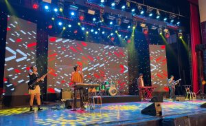

NHỮNG “CHIẾN BINH” BAN NHẠC THPT CHU VĂN AN SẴN SÀNG CHO ĐÊM CHUNG KHẢO
Bên cạnh việc ráo riết tập luyện các tiết mục, ban nhạc THPT Chu Văn An đã chuẩn bị tinh thần “cháy” hết mình trong đêm Chung khảo Liên hoan ban, nhóm nhạc học sinh THPT thành phố Hà Nội năm 2023.
Gấp rút chuẩn bị
Đến với vòng Chung khảo, ban nhạc biểu diễn hai tiết mục: hòa tấu “Yêu” và đệm hát “Bóng mây qua thềm”. Chia sẻ về lý do chọn tiết mục, trưởng đoàn Phạm Mai Huyên cho biết: “Chúng tôi chọn hai bài hát này nhằm thể hiện nét trẻ trung và rất riêng của ban nhạc. Hai bài hát này cũng rất phù hợp với chủ đề xây dựng văn hóa học đường Thủ đô. Đồng thời, nó cũng sẽ có nhiều đất thể hiện cho những cây solo trong ban nhạc.
Liên hoan diễn ra khá gấp gáp, ban nhạc chỉ có 2 tuần để chuẩn bị cho đêm Chung khảo. Chị Mai Huyên tâm sự về khó khăn trong luyện tập và chuẩn bị: “thời gian tương đối ngắn, không có quá nhiều buổi luyện tập, các bạn vừa phải đi học vừa cân đối thời gian tập luyện. Ban nhạc cũng khó khăn lựa chọn các tác phẩm làm sao vừa thể hiện chủ đề vừa thể hiện tài năng ban nhạc lại phù hợp với thị hiếu các bạn trẻ”.
Các thành viên ban nhạc trường THPT Chu Văn An
Trong trường THPT Chu Văn An, ban nhạc luôn được các thầy cô dạy âm nhạc quan tâm, hỗ trợ. Vì các tiết mục có liên quan đến bản phối, cách đàn cách hát giữa các bạn nên nhà trường có mời biên đạo ở ngoài để dẫn dắt và truyền tải kinh nghiệm cho các em học sinh.
Sau những giờ tập luyện căng thẳng, các thành viên lại đi ăn, vui chơi cùng nhau để tăng tính đoàn kết
Sẵn sàng về đích
Sau vòng sơ khảo, các thành viên trong ban nhạc tự tin đánh giá: “Ban nhạc đã thể hiện hết sức và thấy hài lòng, cũng không bị sai hay có lỗi nên các bạn rất kỳ vọng”.
Dù 7 tên tuổi bước vào Chung khảo đều là những ban nhạc có tiết mục rất xuất sắc, đội nào cũng có điểm mạnh riêng nhưng với nhóm nhạc của trường THPT Chu Văn An, các bạn đều là những nhân tố rất xuất sắc của trường.
Giám đốc Sở GD-ĐT Hà Nội Trần Thế Cương cho biết, sau một thời gian dài học sinh không có một sân chơi tinh thần thực sự ý nghĩa sau những giờ học vất vả, Liên hoan các ban nhạc, nhóm nhạc học sinh THPT lần đầu tiên được tổ chức với mục tiêu nâng cao đời sống tinh thần, xây dựng văn hoá học đường lành mạnh, tạo sân chơi cho những học sinh Thủ đô có năng khiếu, đam mê âm nhạc.Mặc dù các khâu tổ chức liên hoan âm nhạc nảy sinh không ít khó khăn như thu hút sự hưởng ứng từ học sinh, sự đồng thuận của phụ huynh, nhà trường, kinh phí tổ chức… tuy nhiên, ngay sau khi phát động, liên hoan âm nhạc đã nhận được sự hưởng ứng nhiệt tình từ học sinh, nhà trường, đặc biệt là sự ủng hộ của các chuyên gia, nghệ sĩ âm nhạc.
Là người theo dõi, quan tâm ban nhạc từ những ngày đầu, chị Phạm Mai Huyền, trưởng đoàn của Ban nhạc THPT Chu Văn An cho biết: “Thành viên trong ban nhạc THPT Chu Văn An là những bạn yêu thích, đam mê nghệ thuật. Các bạn có niềm đam mê rất lớn, luyện tập không biết mệt mỏi, lúc nào cũng tràn ngập năng lượng tích cực.
Các cây piano, guitar đều là học viên của nhạc viện có tham gia học chuyên nghiệp. Hay những bạn hát đều lựa chọn từ các ban nhạc mạnh của trường thông qua một số vòng casting”.
Ban nhạc tập luyện hăng say cho cuộc thi
Dù là lần đầu tiên tổ chức nhưng Liên hoan ban, nhóm nhạc học sinh THPT thành phố Hà Nội năm 2023 thực sự là một sân chơi bổ ích cho các ban nhạc THPT trong địa bàn thành phố Hà Nội. Đó là cơ hội để các bạn không chỉ phát triển về học tập, văn hóa mà cả năng lực và niềm đam mê.
Đánh giá về Ban nhạc THPT Chu Văn An nói riêng và Liên hoan ban, nhóm nhạc học sinh THPT thành phố Hà Nội năm 2023, nhà giáo Nguyễn Thị Nhiếp – Hiệu trưởng trường THPT Chu Văn An nhấn mạnh: “Liên hoan được tổ chức trong điều kiện vô cùng ý nghĩa khi chương trình giáo dục phổ thông 2018 đang được triển khai trong các nhà trường, hướng đến giáo dục toàn diện cho học sinh về cả âm nhạc, thẩm mỹ song song với tri thức. Đây là một đòn bẩy, một động cơ lớn để các nhà trường phát triển môn âm nhạc trong trường học. Chúng tôi mong muốn đây không chỉ là cuộc thi mà còn là sự kết nối giữa gia đình – nhà trường, cha mẹ – con cái, học sinh – thầy cô, học sinh – học sinh”.
Với ban nhạc của trường THPT Chu Văn An, Liên hoan lại có ý nghĩa lớn hơn nữa. Bởi qua đây, trường đã phát huy tinh thần đoàn kết, liên kết với nhau tạo nên một ban nhạc chung. Đồng thời, Liên hoan cũng là nơi để các bạn thể hiện hết năng lực của mình ở một sân chơi lớn hơn so với không gian sân khấu nhà trường, nâng cao năng lực khi được cọ xát với các trường khác.

Ban nhạc THPT Chu Văn An biểu diễn vòng sơ khảo
Tiến vào vòng Chung khảo, cả ban nhạc thể hiện sự quyết tâm về đích chiến thắng trong đêm chung kết tổ chức vào tối nay (14/4) tại trường THPT Việt Đức, Hoàn Kiếm, Hà Nội.